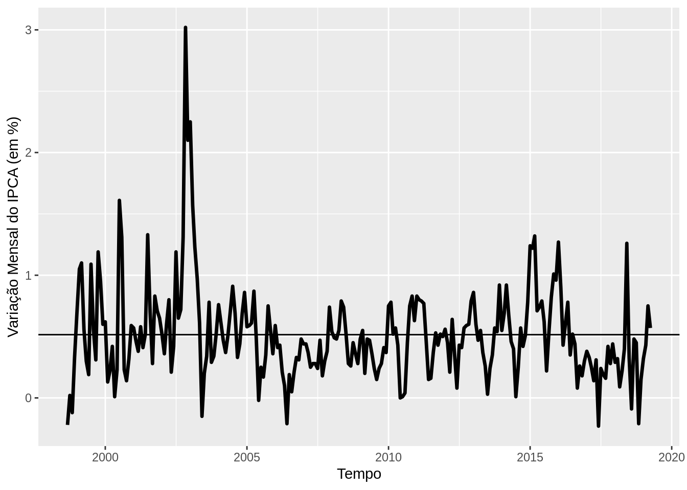
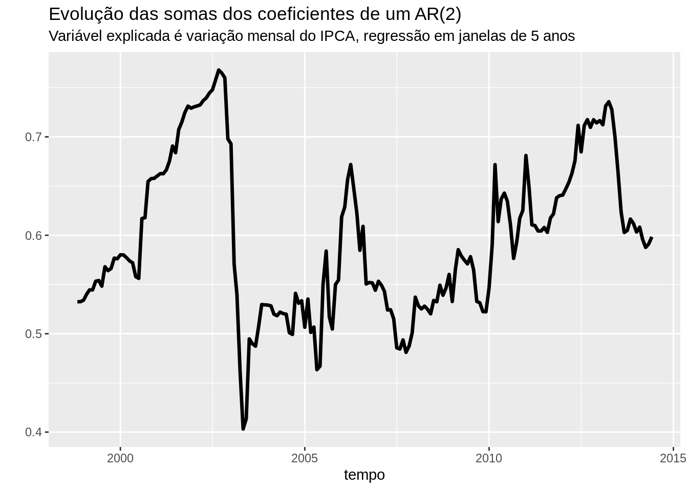

library(ggplot2)
library(dplyr)
library(BETS)
ipca = BETSget(433,
from = "1998-09-01",
data.frame = TRUE) # IPCA desde outubro de 98
ipca %>%
ggplot(aes(x = date, y = value)) +
geom_line(size = 1.2) +
xlab("Tempo") +
ylab("Variação Mensal do IPCA (em %)") +
geom_hline(yintercept = mean(ipca$value)) # linha horizontal na média
Se notarmos a inflação no período \(t\) como \(\pi_t\), modela-la como um processo autoregressivo de ordem \(k\) é estimar o seguinte modelo:
\[\pi_t = \phi_0 + \sum_{i=1}^{k} \phi_i \pi_{t-i} + \epsilon_t\]
base = ipca
for(i in 4:nrow(ipca)) {
base$primeiro_lag[i] = base$value[i-1]
base$segundo_lag[i] = base$value[i-2]
}
base = base[3:nrow(base),]
coeficientes = vector()
janela = 12*5 # número de meses em cada janela de 5 anos
n = nrow(ipca) - janela
for(i in 1:n) {
window = base[i:(i+janela),]
modelo = lm(value ~ primeiro_lag + segundo_lag,
data = window)
coeficientes[i] = modelo$coefficients[2] + modelo$coefficients[3]
}
coeficientes = data.frame(coef = coeficientes,
tempo = base$date[1:length(coeficientes)])
coeficientes %>%
ggplot(aes(y = coef, x = tempo)) +
geom_line(size = 1.2) +
labs(title = "Evolução das somas dos coeficientes de um AR(2)",
subtitle = "Variável explicada é variação mensal do IPCA, regressão em janelas de 5 anos") +
ylab("") 